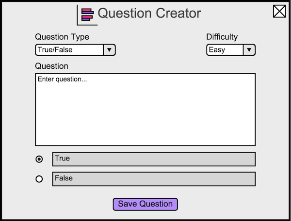

2.x.2. Creating a True/False Question
To create a true/false question, the user opens the question creator dialog, and then changes the question type to True/False. The
user will see Figure x5.

Figure x5: Default True/False view.
For true/false questions, the user changes which is the correct option by selecting the circle next to the correct
choice.
Prev: appt-scheduling
| Next: more-scheduling
| Up: functional
| Top: index